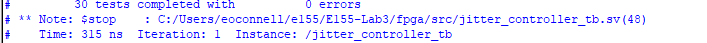
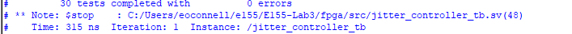

Lab 3: Keypad Scanner
Introduction
This lab aimed to build upon Labs 1 and 2 with clock multiplexing and seven segment displays, to build a keypad scanner that displays the last two digits pressed. This required dealing with clock bouncing, and asyncronous inputs.
Design and Testing Methodology
This lab included a lot of separate parts that had to be tested independetly to have a working design. Thus, I created many submodules that could be independetly tested with testbenches. I wrote modules to deal with asyncronous inputs, and the rest of my design fully assumes that these inputs work as expected.
Clock Debouncing
One inherant problem of using physical switches is the problem of clock bouncing or jitter. This is a short period when the switch is first pressed when the physical contact vibrate and might not read a stable value. This would result in a single press being read as multiple key strokes, and could also complicate function when one key is held down and another is pressed immediately after.
The strategy that I used to deal with this problem was to keep track of a button that is pressed, and wait for a specified number of cycles before going back into a scanning mode. During these cycles, if the key is detected again, it resets the counter. Therfore, while a button is in a clock jitter phase or help down for a long time, the count will keep resetting and the system will stay in the active state and not return to the scanning state.
This has the advantages of detecting a keypress essentially instantaenously. Other strategies, such as a low-pass filter can cause significant delays in seeing a digit be recognized. Additionally, it combines the debouncing with the handling of simultaneous inputs or an input while a key is being held. This group of interacting FSMs does a lot of the heavy lifting to ensure correct functionality of the system. It also is able to do a good job of detecting the same button pressed multiple times (different to clock jitter, this is an actual human clicking a button multiple times) as once the set number of cycles without a button push is reached it is now scanning for new buttons, and this includes the same button that was just released.
Similar to the low-pass filter, another strategy would be to wait for a certain number of consecutive cycles to “agree” that a switch has been pressed. Even if the delay is minimal, this still requires a delay from a switch being pressed to being officially detected and displayed on the seven segment display. My method has the detection on the first leading edge of a new clock press, and handles the bounce on the backend instead of the frontend.
Another option is to slow the clock down significantly. My method allowed me to use a 6 MHz clock with no issues, and this made sure that everything was very responsive and quick. By dividing this clock this would also reduce the response time. This method still requires checking multiple cycles, and also requires the extra hardware of a second clock divider.
Finally, another method is to use a FSM with explicitly defined states for handling the clock jitter. This is essentially similar to what I do with the counter, but my counter logic is much simpler in my opinion.
Top Level module
For the top level module, I wanted to make sure that everything was wired correctly together, and that the keypad was controlling the digits as expected. We don’t need to go through every single state of all submodules because we have thuroughly tested them all independently. This is the value of having very little logic in the top level module itself, it is mainly wiring things together.
Module Resuse
I used multiple modules that I have used in lab 1 and lab 2, specifically the seven segment display module and the clock divider module. Because I have tested these thoroughly, I can use these as building blocks that I know work.
Eye test
For this type of project, the simple eye test is very important. Just because the verilog works as expected, we need to make sure that the chosen frequency for switching digits is fast enough to not notice flickering, but slow enough to not see any digits bleeding into each other. Additionally, it is difficult to know if the clock bounce protection works as intended until you use the physical keypad. Finally, the asyncronous inputs cannot really be simulated to test if they are metastable, so for all of this I needed to wait and see if it worked in hardware.
Technical Documentation:
The code for my project can be found on my github page. Lab3 Github Repository
Block Diagram
The block diagram in Figure 1 demonstrates the overall architecture of the design. The top-level module top includes three submodules: the high-speed oscillator block (HSOSC), the clock divider module (divider), and the seven segment display decoder (display).
It also includes a mux to switch between the two DIP switch input signals, an adder to sum together the input signals, and an inverter to create a set of opposing display control signals (when one is one the other is off and vice versa).
Schematic
Figure 2 shows the physical layout of the design. I need resistors for the 7 segment display, and these remain the same from lab 2. The seven segment display has a typical forward voltage of 1.95 V (from datasheet), the PNP transistor has a Collector−Emitter Saturation Voltage of around 0.2 V, and given the 3.3 V input, we have an base voltage of \(3.3 - 1.95 - 0.2 = 1.15\). we get \(I = V/R = 1.15 / 330 = 3.48\) mA. This is an acceptable current for the FPGA GPIO pins, and the seven segment display has a bright clear ouptut, so this is what was used.
Additionally, I need to calculate the resistor for the gate of the PNP transistor. From the data sheet, the Base−Emitter Saturation Voltage has a typical value of \(0.9\) V. That means the base is sitting at \(3.3-0.9 = 2.4\) V. My initial choice was a 2.2 k \(\Omega\) resistor, which gives \(2.4/2200 = 1.09\) mA through the FPGA pin. This is a perfectly acceptable FPGA current, and the transistor is operating correctly so it is used for this lab.
Finally, I needed pull-down resistors to make sure that the horizontal input pins to the FPGA are not floating when the button is not pressed. I was using pull-down resistors instead of pull-up resistors because my switches were wired in a way to be active high instead of active low. The resistor I used was 10 k \(\Omega\). This worked as intended so the value was kept. This is not a board safety resistor like the current limiting resistors, we would only need to change it if it was providing floating behavior that was not working as intended.
FSM Diagrams and Tables
Now we have the state transistion and output tables:
Note, for the count FSM the output is the same as the state itself, so a separate column is not shown.
Here we see the internal flops inside the synchcronizer and store_keypresses modules. These look very similar in design but serve completely different functions. One is a synchcronizer and one is a shift register.
Results and Discussion
I accomplished all of the perscribed tasks: The keypad correctly inputs to the two digit seven segement display with no flickering, no switch bouce, and with all digits at an even brightness. The board remains functional when multiple inputs are pressed, and when a button is held and other buttons are pressed before it is released.
Testbench Simulation
The first testbench is to simulate the top level module. We can see the waveforms match the expected values. For this test, I modified the parameter TOGGLE_COUNT for the divider to make the divided clock only half the frequency of the regular clock. This allows for a much more managable testbench as we do not need to wait thousands of cycles for the divided_clk to flip.
To generate the long test vectors file for the top level module to have complete coverage of all input combinations, I wrote a short python script generate_lab2_eo_testvectors.py which loops through all input combinations and appends one cycle with the first digit illuminated, and a second cycle with the second digit, before moving to the next switch combination. This made it very easy to modify the test vectors as I developed the module itself, instead of working on a very large complex testvector file directly.

Here, we are using the exact same unmodified display module from lab1, and we have the same test bench to confirm it’s functionality. We test for all combinations of s, and ensure that the 7 bit binary output is as expected.
Figure 6 shows that all 16 possible combinations of s matched the expectation.

Just like the seven segment display decoder, we are reusing the clock divider as well.
Here we can see that the test verison spends 10 cycles at zero and 10 cycles at one. This divides the frequency by 20. This testbench is much easier to keep track of then trying to simulate the clock divider counting thousands of cycles, yet still provides confirmation that it is working as intended.

Figure 8 gives confirmation that the module outputs match the expected values for all tests.
 
 
Conclusion
Lab 3 was quite difficult, but not that much worse than the previous labs. I spent around 4 hours writting verilog at home, and then around 10 hours in the lab writting testbenches, reviewing testbench results, modfing code, and making the design work on my hardware. Including the write up, the lab was around 17 hours in total.
The lab was succesfull as I was able to get everything to work as intended.
The most difficult part was figuring out why my keypad was not working when I build my breadboard circuit. I was not dividing my clock and I think this resulting in some hold time constraints that was causing some strange behavior on my keypad. Then I instantiated a second clock divider to slow down the keypad logic, but it caused everything to stop working completely. I think this was another timing issue, but I didn’t figure it out. I finally got it to work by changing a parameter on the high speed osciallator and running it at a naturally lower frequency.
AI Prototype Summary
Prompt A 1: Whole Lab (Monolithic) Write synthesizable SystemVerilog to scan a 4x4 matrix keypad and display the last two hex keys pressed on a dual 7‑segment display. Implement: A clock divider that derives a scan clock on the order of 100–200 Hz from the internal oscillator. A keypad scanning controller that iterates one active‑low column at a time and samples active‑low rows, registering at most one key per press (debounce‑by‑design), ignoring additional presses while any key is held, and allowing a new registration only after release. A top level that updates two hex digits (older and most recent) when a new key is registered and drives a time‑multiplexed two‑digit 7‑segment display without visible flicker and with balanced brightness. Use idiomatic SystemVerilog (e.g., logic, always_ff, enumerated states for FSMs). Provide clean module boundaries and keep all state synchronous. Include brief comments explaining the design choices.
I used my ChatGPT free account to create this, and all the files are contained in here on my github.
The monolithinc approach synthesized succesfully in radiant which really surprised me. The design actually broke it up into 3 modules and good documentation for each. I think that the much longer prompt with more detailed instruction is why this worked. Previous prompts were sometimes more like one sentence and thus the results were less accurate. This shows the importance of prompt engineering.
The part B of this was broken into multiple prompts, one for each module:
Prompt B 1: LLM Prompt 1: One‑shot Registration (Debounce‑by‑design) Overall Goal: Write SystemVerilog to scan a 4x4 matrix keypad and display the last two hex keys pressed on a dual 7 segment display. Current Goal: Write a synthesizable SystemVerilog module that produces a one‑shot registration signal for the keypad system. Behavior: When a key press is first detected, capture the current key code and assert a single‑cycle “new key” pulse. While any key remains pressed, do not accept additional keys. Only after keys are released should a subsequent press be recognized. This should handle debouncing of the keys. Implement as a small synchronous FSM with enumerated states and glitch‑free outputs. Keep names and interfaces reasonable; do not assume any hidden modules beyond what you define here. For some reason, despite providing the files as context, the LLM did not use the correct port names when instantiating the modules. For example for the divider it used
clk_inandclk_outinstead ofclkanddivided_clkwhich my module uses. Likewise it usedinandoutfor the seven segment display instead ofsandseg. It also got the parameter nameTOGGLE_COUNTwrong and called itn. Somehow it new what the inputs, outputs, and parameters were, but somehow did not copy over the names correctly.
Prompt B 2: Target device: Lattice iCE40 UP5K FPGA. Write a synthesizable SystemVerilog module that cycles through keypad columns (active‑low, one at a time) and samples rows (active‑low) to detect a single key at a time. Behavior: Iterate columns at a suitable scan rate derived from the divided clock and sample rows. When a key is detected, report a stable key code consistent with a standard 4x4 keypad layout and maintain it while the key remains pressed. Provide a boolean signal indicating whether any key is currently pressed. Use clean state encoding and synchronous logic; avoid combinational feedback and latches. I performed those manual changes, the design synthesized correctly. It got the oscillator correct, and the rest of the SystemVerilog code seems reasonable (but also not modular like Prompt 1 response).
Prompt B 3: Integrate and Display Target device: Lattice iCE40 UP5K FPGA with internal oscillator as the root clock source. Write a top‑level SystemVerilog module that instantiates the scanner and one‑shot modules, shifts the last two keys (older ← most recent; most recent ← new), and drives a multiplexed two‑digit seven‑segment display. Requirements: Update the displayed digits only when a new key is registered. Ensure equal apparent brightness and no visible flicker. Keep all logic synthesizable and synchronous; use idiomatic SystemVerilog constructs. Provide any small clock‑enable or divider logic you need. You can also assume that a sevenSegment module exists that takes a 4 bit input and outputs the 7 segments.
This design failed during the place and route, and crashed out of synthesis. This is because it got the module name wrong for the high speed oscillator. Instead of using HSOSC, it used SB_HFOSC. Despite this, on the surface level the modules seemed partitioned well. When I fixed this error, I got some more errors, including that there was an unknown module sevenSegment instead of display which is in the file I gave as context. After fixing this, more similar errors kept popping up so I stopped. Similar issue to the name issue I had for AI prototype in lab2.